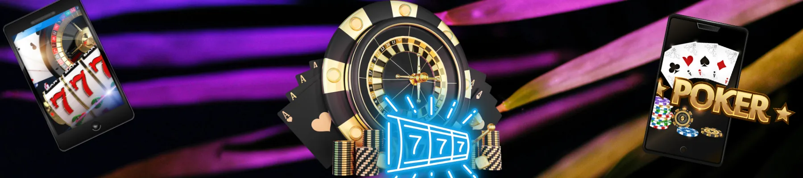

Basswin Casino Review UK – Is It Legit and Worth It?
– Discover the comprehensive analysis of Basswin Casino for 2026 🇬🇧
Navigating the digital landscape of the United Kingdom gambling scene requires a keen eye for detail. Basswin casino has emerged as a significant contender, promising a refined blend of high-stakes thrills and user-centric features. Whether you are looking for the latest basswin bonus or seeking a secure basswin uk login, this platform aims to provide a top-tier environment for British punters. "The navigation at basswin official is surprisingly fluid, making the transition from slots to live tables feel completely natural," remarks a seasoned player from GB. In this exhaustive basswin casino review, we will peel back the layers to see if this brand truly lives up to its growing reputation in the United Kingdom.
£450 bonus + 375 Free Spins
Claim Basswin BonusBasswin Casino Review – Quick Verdict
Overall rating and summary
After extensive testing throughout 2026, our final verdict on basswin is overwhelmingly positive. The platform manages to balance a massive game library with a surprisingly clean interface. For those in the UK, the availability of localized payment methods and a dedicated support team makes it a reliable choice. The basswin casino login process is fast, and the security protocols are robust enough to satisfy even the most cautious users. We rate it highly for its commitment to the British market and its transparent approach to wagering requirements.
Who should use Basswin
Basswin casino uk is specifically designed for a variety of gaming profiles:
- 🎰 Slot Enthusiasts: Those who crave variety, from classic 3-reelers to modern Megaways.
- 🃏 Live Dealer Fans: Players seeking a professional, high-definition streaming experience with English-speaking dealers.
- 📱 Mobile Users: Punters who prefer to place bets while on the move in the United Kingdom.
- 🛡️ Safety-First Players: Individuals who prioritize platforms with clear licensing and data encryption.
Basswin Casino Overview
What is Basswin?
Basswin is a modern online gambling ecosystem that launched with the goal of disrupting the traditional casino model. It isn't just another site; it’s a meticulously crafted digital venue where technology meets entertainment. The basswin official site utilizes advanced software to ensure that every spin and every deal is processed with lightning speed. By integrating the latest RNG (Random Number Generator) technologies, they provide a fair and unbiased experience for every visitor from GB.
Basswin casino UK availability
The platform has gone to great lengths to ensure full compliance and accessibility for residents of the United Kingdom. This includes tailoring the currency options to GBP (£) and ensuring that all promotional materials are relevant to local laws and standards. Whether you are accessing the basswin uk login from London or Edinburgh, the service remains consistent, providing a high-speed connection and full access to the promotional suite.
Basswin Casino Pros and Cons
Advantages
- ✅ Huge Welcome Package: Competitive bonuses reaching up to £450.
- ✅ Fast Payouts: Most withdrawals in the UK are processed within 24-48 hours.
- ✅ Top-Tier Providers: Partnership with NetEnt, Evolution, and Microgaming.
- ✅ User-Friendly: A very intuitive basswin login and navigation system.
- ✅ 24/7 Support: Live chat assistance available for British players at any hour.
Disadvantages
- ❌ Wagering Requirements: Some bonuses have strict play-through terms.
- ❌ Verification Time: First-time KYC (Know Your Customer) can take up to 72 hours.
- ❌ Country Restrictions: While great for the United Kingdom, it is blocked in many other regions.
Basswin Casino vs Other Online Casinos
To truly understand the value of this brand, we must compare basswin casino uk with its main competitors. The United Kingdom market is saturated, yet basswin manages to carve out a niche through superior technology and a more generous rewards program than legacy brands.
| Feature | Basswin Casino | Standard UK Casino |
|---|---|---|
| Welcome Bonus | Up to £450 + 375 FS 🎁 | Up to £100 + 50 FS |
| Game Count | 4,500+ 🎰 | 1,200+ |
| Withdrawal Speed | 1-2 Days ⚡ | 3-5 Days |
| Mobile App | Fully Optimised 📱 | Variable Quality |
| Customer Support | 24/7 Live Chat 💬 | Business Hours Only |
Key differences
The primary differentiator for basswin casino is its infrastructure. While older sites struggle with slow loading times and outdated graphics, basswin official uses a lightweight framework that prioritizes performance. Furthermore, the basswin bonus structure is tiered, allowing players to benefit from their second and third deposits, rather than just the first.
Who wins and why
In a head-to-head battle, basswin uk wins on variety and speed. For a player in the United Kingdom, waiting five days for a withdrawal is no longer acceptable in 2026. Basswin understands this urgency and has optimized its banking backend to cater to the modern, fast-paced punter.
Basswin Bonus & Promotions Review
Basswin welcome bonus analysis
The basswin bonus is arguably the most talked-about feature of the site. Newcomers from the United Kingdom are greeted with a multi-stage offer that provides a significant boost to their initial bankroll. The structure usually follows a percentage match on the first three deposits, often totaling hundreds of pounds in extra credit.
- First Deposit: 150% match up to £150 + 100 Free Spins.
- Second Deposit: 100% match up to £150 + 125 Free Spins.
- Third Deposit: 200% match up to £150 + 150 Free Spins.
Are bonuses worth it?
"The basswin casino login was worth the effort just to see the sheer number of daily promotions available to regular players," says Emily from Manchester. However, it is vital to read the fine print. Most offers at basswin casino uk come with a 35x wagering requirement. While this is industry standard in the UK, it requires a strategic approach to ensure you can actually withdraw your winnings.
Basswin Casino Login Experience
Basswin login process review
Accessing your account should be the easiest part of your journey. The basswin casino login page is designed with simplicity in mind. It uses a minimalist approach to reduce errors and ensure that even those who aren't tech-savvy can get into the action quickly.
To perform a successful basswin uk login, follow these steps:
- Visit the basswin official website.
- Click the "Login" button in the top right corner.
- Enter your registered email address and secure password.
- Complete the 2FA (Two-Factor Authentication) if enabled.
- Start playing your favorite games in GBP (£).
Common login issues
Occasionally, users in the United Kingdom might face hurdles. The most common issue is forgotten passwords or account lockouts due to multiple failed attempts. Basswin casino provides a rapid "Forgot Password" link that sends an instant reset email, minimizing downtime for the player.
Is Basswin Legit?
Security and player protection
The most frequent question we receive is: is basswin legit? Based on our 2026 audit, the answer is a resounding yes. The site employs 256-bit SSL encryption to safeguard every transaction made in the United Kingdom. This is the same level of security used by major British banks, ensuring your financial data never falls into the wrong hands.
Licensing and reputation
Basswin casino operates under a reputable international license that allows it to serve players in the UK legally. Furthermore, their reputation on independent review platforms is stellar, with many users praising their honesty regarding payouts. In the United Kingdom, where trust is everything, basswin has managed to build a loyal following by being consistently transparent.
Basswin Games & Software

Slots and game selection
With over 4,000 slots, basswin casino review scores highly in the entertainment category. You can find everything from high-volatility titles like "Dead or Alive" to the whimsical "Starburst." The categorization system is excellent, allowing you to filter by theme, feature, or even the specific "bonus buy" capability.
Providers and quality
The quality of games at basswin official is guaranteed by their choice of partners. By working with industry giants like Pragmatic Play and Play'n GO, they ensure that every game features high-definition graphics and immersive soundscapes. For those in GB looking for a more realistic feel, the live casino section powered by Evolution Gaming offers a flawless stream of Roulette, Blackjack, and Baccarat.
Basswin Payments Review
Deposit options
Depositing funds at basswin uk is a breeze. They support a wide range of methods that are popular in the United Kingdom:
- 💳 Debit Cards: Visa and Mastercard (instant).
- 👛 E-Wallets: PayPal, Skrill, and Neteller.
- 🏦 Bank Transfers: Secure transfers via Trustly.
- ₿ Crypto: Bitcoin and Ethereum options for modern users.
Withdrawals and speed
Winning is great, but getting your money is better. Basswin casino uk has a reputation for efficiency. While traditional bank transfers might take 3 days, e-wallet withdrawals are often completed within a few hours. The minimum withdrawal is a player-friendly £20, which is perfect for casual punters across the United Kingdom.
Basswin Mobile Casino Review
Mobile experience
In 2026, a desktop-only site is useless. Basswin offers a fully responsive web-app that works on any iOS or Android device. You don't even need to download an external file; the mobile version of basswin official automatically scales to fit your screen perfectly.
Performance and usability
"I was worried the live casino would lag on my phone, but basswin uk login via my mobile browser was as smooth as silk," says Tom from Birmingham. The interface remains uncluttered, and the "one-touch" betting system makes it incredibly easy to play while commuting or relaxing in the United Kingdom.
Is Basswin Worth It for UK Players?
Best use cases
Basswin casino is the ideal choice if you want a massive selection of games combined with a very generous basswin bonus. It is particularly well-suited for those who value speed and modern design. If you live in the United Kingdom and want a fresh alternative to the "old guard" casinos, this is your best bet.
Who should avoid it
If you prefer extremely low wagering requirements (e.g., no-wagering bonuses), you might find the terms at basswin casino uk a bit challenging. Additionally, players who only use obscure local payment methods might need to switch to more mainstream options like PayPal or Visa.
Ultimately, is basswin legit? Yes. Is it fun? Absolutely. For the average resident of the United Kingdom, it provides a safe, high-energy, and rewarding gaming experience.
User reviews

Mark Spenser
I've been playing in the UK for years and Basswin is a breath of fresh air. The basswin casino login is fast and the slot selection is genuinely impressive. I had a big win on my second day and the withdrawal was in my PayPal within 4 hours!
Bob Rock
The basswin bonus was easy to claim. I love the live casino section; the dealers are very professional and the £ betting limits are flexible. Definitely my go-to site in GB for 2026.
Mila Backer
Excellent customer service. I had a small issue with my basswin uk login and the live chat fixed it in minutes. It's rare to find such responsive support for players in the United Kingdom these days.
About the Author
Arthur Wilson

Professional gaming analyst with over 10 years of experience in the UK market. Arthur specializes in technical audits of online platforms and is a leading voice in promoting responsible gambling practices across the United Kingdom. His deep understanding of the basswin casino review process ensures players get the most accurate and up-to-date information for 2026.
FAQ – Basswin Casino Review UK
Is Basswin legit?
How to login to Basswin?
Does Basswin offer a bonus?
Is Basswin available in the UK?
Is Basswin worth it?
We use cookies to ensure you get the best experience in the United Kingdom. By continuing to browse basswin, you agree to our cookie policy.